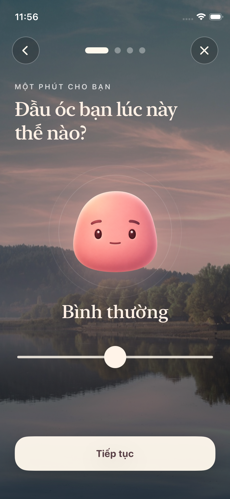
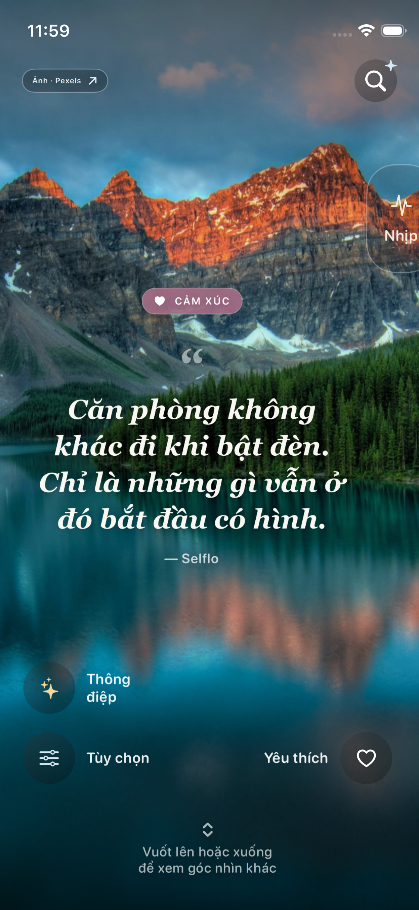
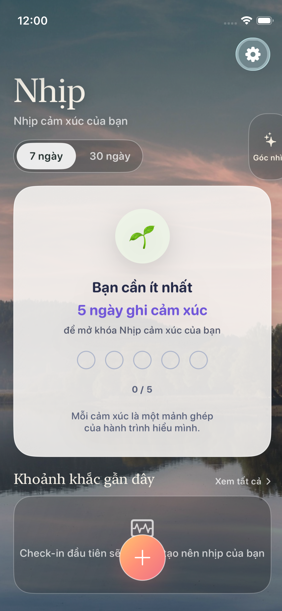

Gọi tên điều đang diễn ra.
Một lần check-in ngắn, không cần viết dài và không có đáp án đúng.
Một không gian riêng tư
Ghi lại cảm xúc, nhìn lại nhịp sống và đọc những góc nhìn vừa đủ—không phán xét, không biến trải nghiệm của bạn thành một bảng điểm.
“Có những ngày, điều cần hoàn thành trước tiên chỉ là trở về với phút đang có.”
Một nhịp nhỏ mỗi ngày
Một lần check-in ngắn, không cần viết dài và không có đáp án đúng.
Quan sát xu hướng và những khoảnh khắc gần đây bằng một nhịp điệu dịu hơn.
Từ một câu gợi mở đến Story và Knowledge được biên tập cẩn trọng.
Trải nghiệm trên iPhone




Theo dõi Selflo
Ghé trang Facebook của Selflo để theo dõi các nội dung đã được phát hành.
Mở Facebook →